DL for PINN
Erfan Hamdi 1401
erfan.hamdi@gmail.com
Me
- Mechanical Engineering at Sharif University of Technology
- 3D Vision Head Developer at Opaltech
Headlines
Deep Learning |
PiNN |
Resources
| Deep Learning | PINN |
|---|---|
| DL with Python, Chollet | Maziar Raissi Blog |
| DL with PyTorch, Stevens | PINN Part I |
| PyTorch Docs | PINN part II |
Tools
- Google Colab
- VSCode
Mechanics of ML
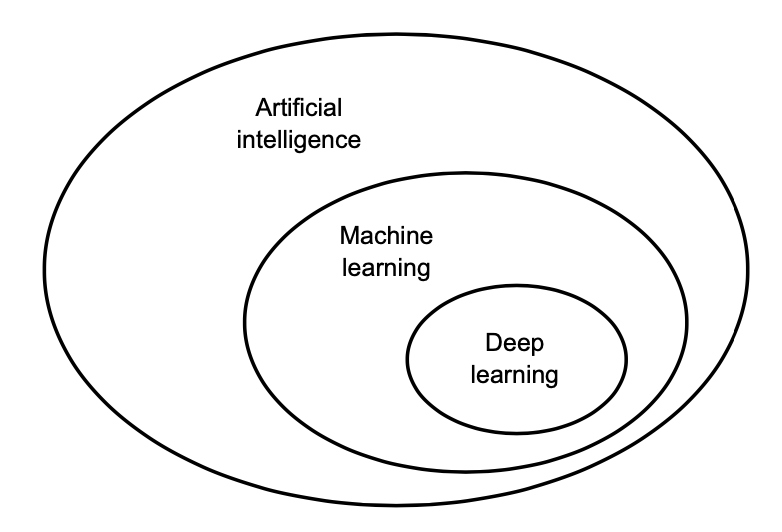
Tasks 🛠
- Regression
- Classification
- Clustering
Paradigms of ML 🍰
- Supervised Learning
- Regression
- Classification
- Unsupervised Learning
- Clustering
- Dimensionality Reduction
- Self-Supervised Learning
Building Blocks of ML
- Data
- Model
- Optimizer
- Loss
- Metric
- Evaluation
Data
- Feature Vector
Model
- Linear
- Tree Based
- Instance Based
- Probabilistic Based
- Kernel Based
- Neural Networks
Bias and Variance

Train, Validation and Test

Imbalanced Dataset
- If we predict all 1:
- Class 1:
- Precision: 0.93
- Recall: 1
- Class 0:
- Precision: 0
- Recall: 0
- Mean Performance:
- Recall: 0.5
- Precision: 0.465
sklearn
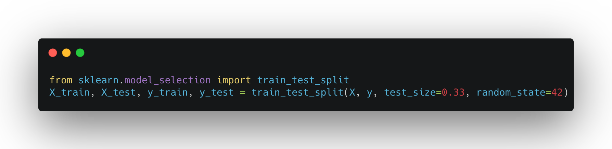Stratify : For imbalanced Dataset, the same distribution of training would be used for testing
PyTorch
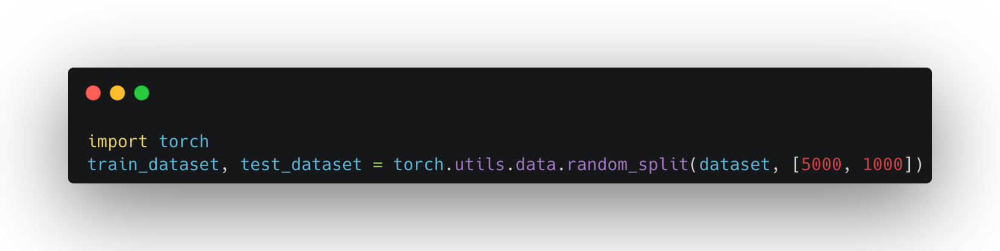Cross Validation
|
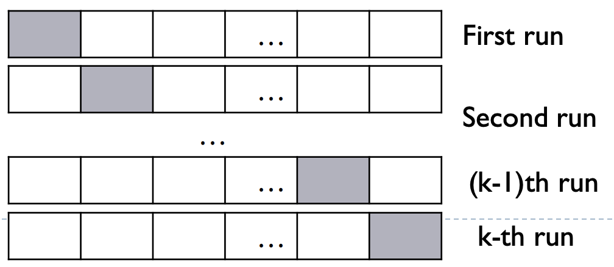 |
Dimensionality Reduction
- PCA
- t-sne
- Autoencoders
Clustering
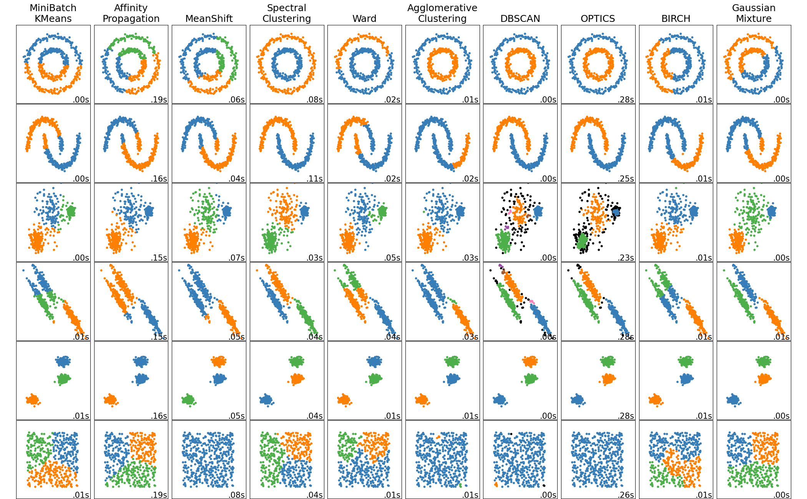Mechanics of DL
Feature Engineering ! 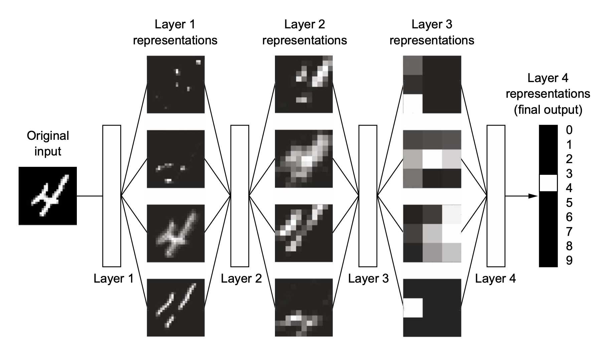Why so deep?
More Complex boundaries.Computational Graph
\[\begin{aligned} f(x) & = (a+b)(e+1) \\ c & = a + b\\ d &= b + 1 \\ f &= c \cdot d \end{aligned} \]
derivative on edge
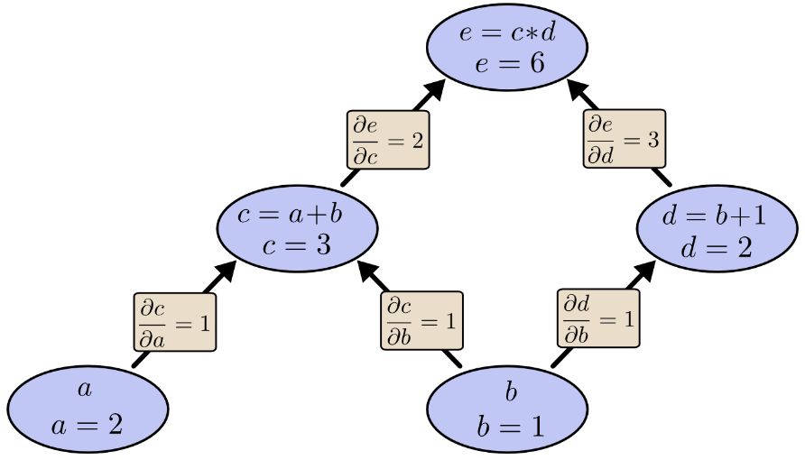\[\begin{aligned} \frac{\partial e}{\partial a} &= \frac{\partial e}{\partial c} \cdot \frac{\partial c}{\partial a}= 2\cdot 1 = 2\end{aligned}\]
Building Blocks of DL
- Tensor
- Model
- Optimizer
- Loss
- Metric
What is a Tensor?
Everything is a Tensor
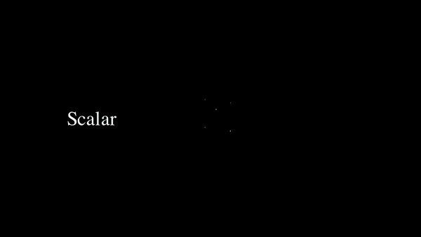Modeling Blocks
- Linear, Convolutional, etc...
- Batch Normalization
- Activation Functions
- Dropout
Batch Normalization
-
The Statistics of the input to each layer changes from each one to the other. So we have to normalize the input to each layer as we did in the first input layer.
-
If not done properly you won't even converge!
-
Accelerating Training by Reducing Internal Covaraince shift.
Batch Normalization
Benefits
- Less Sensitive to initialization
- Use higher Learning Rates
- Regularization Effects
Batch Normalization
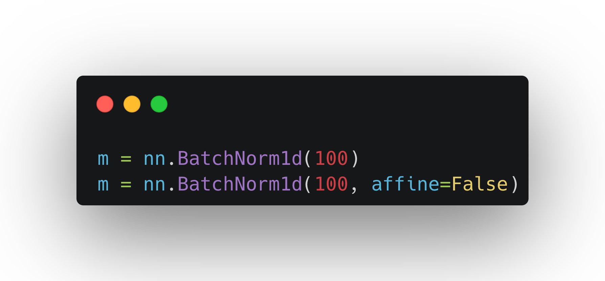Activation Function
Add Nonlinearity to the Model 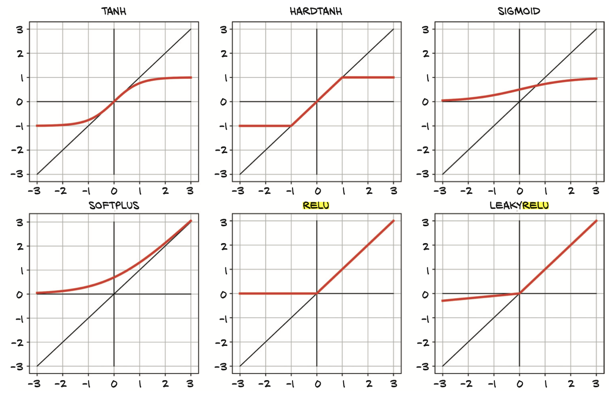Dropout
To avoid overfitting, we can randomly dropout some of the neurons in the layer.
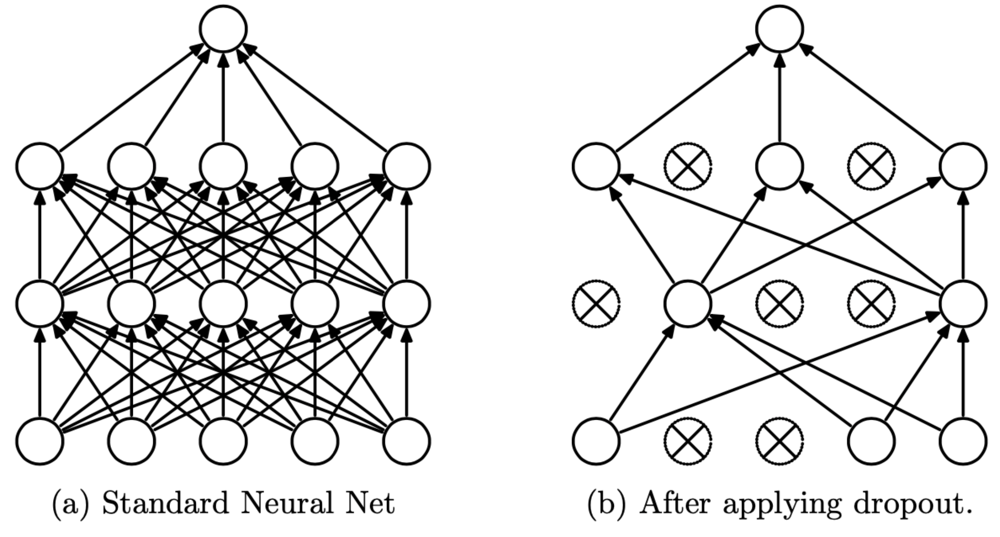PyTorch
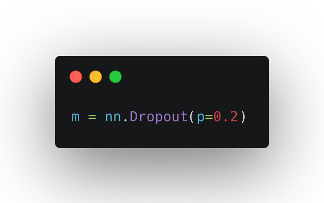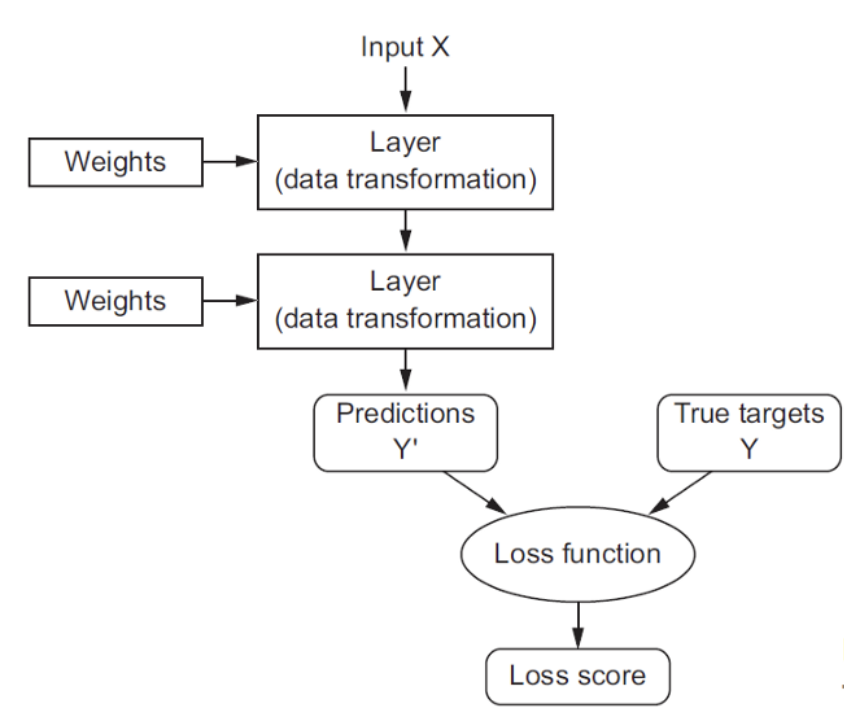
Most used Loss Functions:
- Mean Squared Error (MSE)
- Mean Absolute Error (MAE)
- Cross Entropy
- A differential Equation!
Optimizers
- SGD
- Adam
- RMSProp